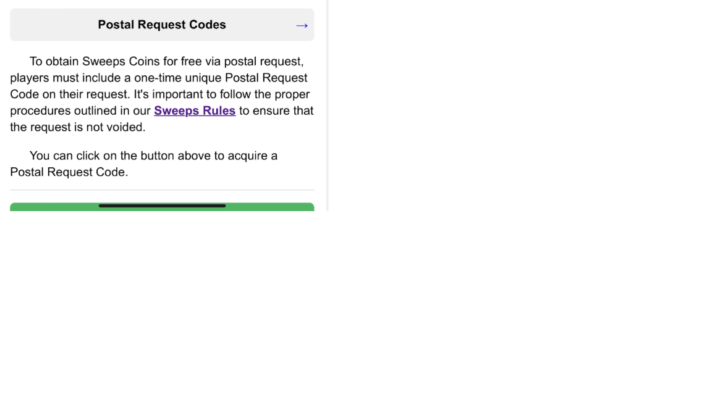
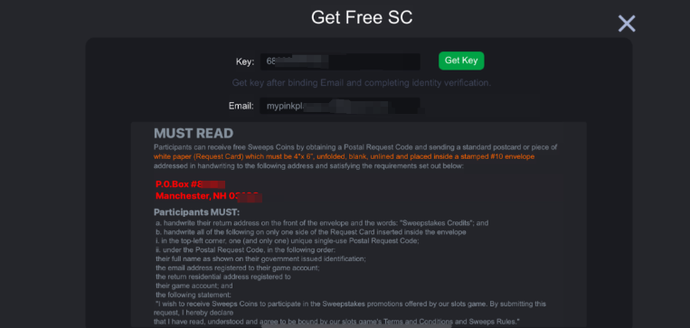
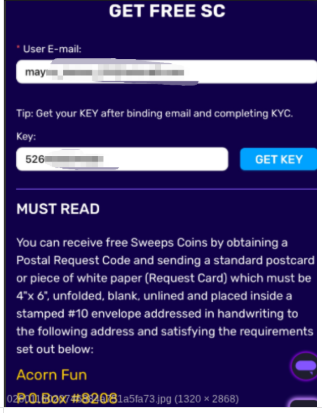

AMOE 通用知识库 | Last Updated: 2026-06-23
AMOE (Alternative Method of Entry) is a free participation method that allows players to receive Sweepstakes Coins (SC) without making a purchase.
AMOE（替代参与方式） 是一种免费参与活动的方式，允许玩家在不充值的情况下获得 Sweepstakes Coins (SC)。
Do not proactively discuss AMOE with players unless the player asks first.
除非玩家主动询问，否则不要主动向玩家提及 AMOE。
If a player has not completed Basic KYC, they will not be able to generate a Postal Request Code or receive the AMOE reward. Instruct the player to complete KYC first.
如果玩家未完成 Basic KYC，将无法生成邮寄请求码或收到 AMOE 奖励。请引导玩家先完成 KYC。
Our games currently only support postal mail (postcard) AMOE. Players must follow the instructions on the in-game AMOE page to send a physical postcard or letter.
我们游戏目前 只支持明信片邮寄 AMOE。玩家必须按照游戏内 AMOE 页面的说明发送实体明信片或信件。

Figure 1: Postal Request Codes — In-game page (Acorn & Legends) / 游戏内邮寄请求码页面（Acorn & Legends）

Figure 2: "Get Free SC" popup — Acorn Gleaming / Acorn Gleaming 游戏 "Get Free SC" 弹窗
Acorn, Legends Display, Acorn Gleaming (and other projects using the postal AMOE system).
Acorn、Legends Display、Acorn Gleaming（及其他使用邮寄 AMOE 系统的项目）。
The AMOE Postal Code Key requires a certain period to refresh. We recommend players wait patiently and try again the next day.
AMOE 邮寄请求码需要一定周期才能刷新。我们建议玩家耐心等待，第二天再尝试。
If a player reports that the key is not refreshing, do not promise a specific refresh time. Use the standard reply below.
如果玩家报告请求码未刷新，不要承诺具体的刷新时间。使用下方标准回复。

Figure 3: "GET FREE SC" page with Key Refresh tip — "Get your KEY after binding email and completing KYC" / "GET FREE SC" 页面含 Key 刷新提示
| Stage / 阶段 | Timeframe / 时间 | CS Action / 客服操作 |
|---|---|---|
| Normal Processing / 正常处理 | ~15 days (half a month) / 约15天（半个月） | Advise player to wait patiently. / 建议玩家耐心等待。 |
| Standard Maximum / 标准上限 | Within 1 month / 1个月内 | Advise player to wait patiently. / 建议玩家耐心等待。 |
| Exceeded 1 Month / 超过1个月 | Over 30 days / 超过30天 | Escalate to Tier 2 (T2) / 升级至二线 (T2) |
For standard AMOE inquiries that are still within the 1-month window, kindly advise the player to wait patiently. Do not escalate prematurely.
对于仍在1个月标准期限内的 AMOE 咨询，请建议玩家耐心等待。不要过早升级。
Hi player, thanks for your patience.
Please kindly note that the Postal Request Code is an alternative method of entry in our game to receive free SC. For further information, please refer to the Sweeps Rules Policy.
You can follow the process on the AMOE page and mail the envelope out. These envelopes will be processed, and this process might need some time to proceed. After the process, we will issue the SC to your game account.
Please let us know if you need further assistance. Have a great day.
您好玩家，感谢您的耐心。
请注意，邮寄请求码是我们游戏中获取免费 SC 的替代参与方式。更多信息请参考 Sweeps Rules 政策。
您可以按照 AMOE 页面的流程操作并寄出信封。这些信封会被处理，整个过程可能需要一些时间。处理完成后，我们会将 SC 发放至您的游戏账户。
如果您需要进一步帮助，请随时告诉我们。祝您愉快。
Hi player, thanks for your patience.
Please kindly note that the AMOE Postal Code Key requires a certain period to refresh. We recommend you wait patiently and try again the next day.
Thanks for your understanding.
您好玩家，感谢您的耐心。
请注意，AMOE 邮寄请求码需要一定周期才能刷新。我们建议您耐心等待，第二天再尝试。
感谢您的理解。
Hi player, thanks for your patience.
We understand you are waiting for your AMOE reward. AMOE requests are usually completed within 1 month. The process involves physical mail handling and verification, which may take some time. We kindly ask you to wait a bit longer. Your SC will be credited to your account once the process is complete.
Please let us know if you still haven't received it after 1 month, and we will look into it for you right away.
Thanks for your understanding.
您好玩家，感谢您的耐心。
我们理解您正在等待 AMOE 奖励。AMOE 请求通常在 1 个月内完成。该流程涉及实体邮件的处理和核实，可能需要一些时间。恳请您再耐心等待一段时间。流程完成后，SC 将发放至您的账户。
如果超过 1 个月仍未收到，请告诉我们，我们会立即为您跟进。
感谢您的理解。
Hi player, thanks for your patience.
We sincerely apologize for the delay in your AMOE reward. Since your request has exceeded the standard processing time, we have escalated this to our specialized team for further investigation. We will update you as soon as we have more information.
Thank you for your patience and understanding.
您好玩家，感谢您的耐心。
对于您的 AMOE 奖励延迟，我们深表歉意。由于您的请求已超出标准处理时间，我们已将其升级至专业团队进一步调查。一有进展我们会立即通知您。
感谢您的耐心与理解。
AMOE (Alternative Method of Entry) is a free way for players to receive Sweepstakes Coins (SC) without making a purchase, by following the entry methods outlined in the Sweeps Rules.
AMOE（替代参与方式）是玩家按照 Sweeps Rules 中的说明，在不充值的情况下免费获得 Sweepstakes Coins (SC) 的途径。
Please ensure you have completed Basic KYC first. Only players who have passed Basic KYC are eligible to generate a Postal Request Code. Also, the key requires a certain period to refresh — please try again the next day if you recently requested one.
请确保您已完成 Basic KYC。只有通过 Basic KYC 的玩家才有资格生成邮寄请求码。此外，请求码需要一定周期刷新 — 如果您最近刚请求过，请第二天再尝试。
AMOE requests are typically processed within 1 month. The timeline depends on physical mail delivery and our support center's processing queue. If it has been over 1 month, please contact us and we will escalate the case.
AMOE 请求通常在 1 个月内处理完成。时间取决于实体邮件的投递和我们的支持中心处理队列。如果已超过 1 个月，请联系我们，我们会升级处理。
Please allow up to 1 month for processing. Ensure you followed all instructions on the AMOE page, including using the correct Postal Request Code, envelope size, and return address. If it has been over 1 month, please contact us with your mailing details and we will investigate.
请预留最多 1 个月的处理时间。请确认您按照 AMOE 页面的所有说明操作，包括使用正确的邮寄请求码、信封尺寸和回邮地址。如果已超过 1 个月，请联系我们并提供邮寄详情，我们会进行调查。
AMOE has participation limits and eligibility requirements as outlined in the Sweeps Rules. Please refer to the in-game AMOE page or the Sweeps Rules for the specific limits applicable to your account.
AMOE 有参与次数限制和资格要求，具体请参阅游戏内 AMOE 页面或 Sweeps Rules 中适用于您账户的限制。
AMOE participation is subject to the same state restrictions as regular gameplay. Players in fully restricted states are not eligible. Please refer to the state restrictions list for details.
AMOE 参与受与常规游戏相同的州限制约束。完全限制州的玩家不符合资格。详情请参考州限制列表。
1. Support Center Callback Issues / 支持中心回调问题
When a player reports not receiving AMOE SC after the standard timeframe, it is often due to the support center missing the callback or failing to process the mail in the queue. In such cases, escalate to T2 so the Project Team can push the support center to complete the callback.
当玩家报告在标准时间内未收到 AMOE SC 时，通常是因为支持中心遗漏了回调或未能处理队列中的邮件。此类情况升级至 T2，由项目组推动支持中心完成回调。
2. Automation Tool Suspicion / 自动化工具怀疑
If there is suspicion that a player is using automation tools to mass-produce AMOE postcards, do NOT mention this to the player. Escalate to T2 / Risk Team for internal review and handling.
如果怀疑玩家使用自动化工具批量生成 AMOE 明信片，不要向玩家提及此事。升级至 T2 / 风控团队进行内部审查和处理。
3. Reward Timeline Reference / 奖励时间参考
While the official standard is "within 1 month," in practice rewards are usually processed within approximately 15 days (half a month). Use the 1-month standard when communicating with players, but be aware that internal processing typically takes ~15 days.
虽然官方标准为"1个月内"，但实际奖励通常在约 15 天（半个月）内处理完成。与玩家沟通时使用 1 个月标准，但内部处理通常约需 15 天。
CS Knowledge Base — General AMOE | sharonwennh.github.io/cs-knowledge-base